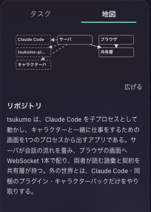
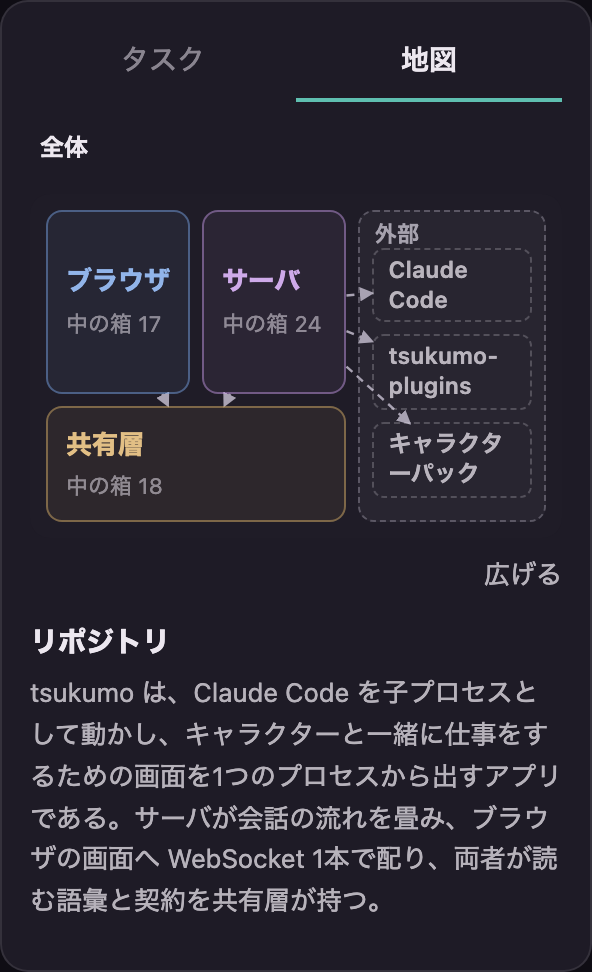
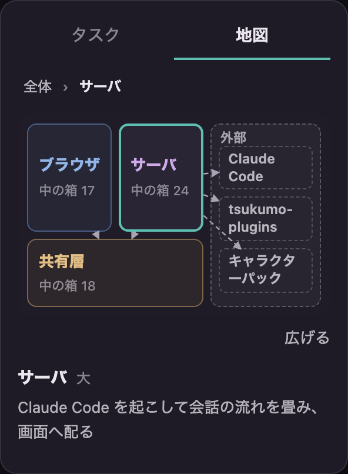
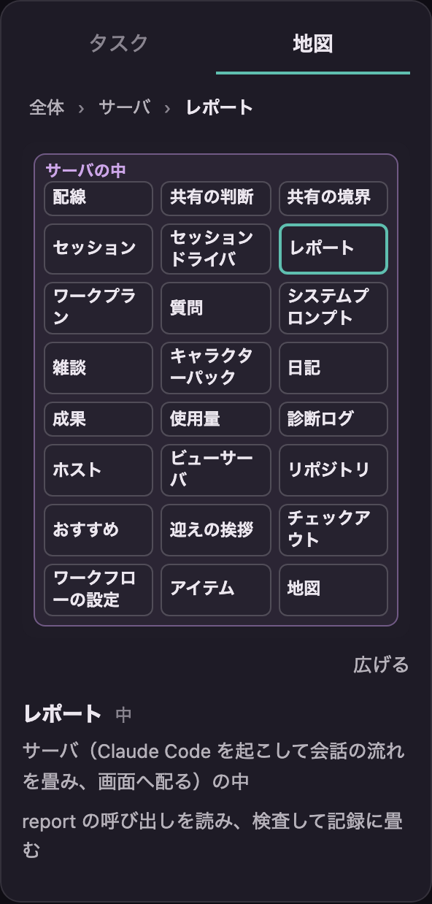
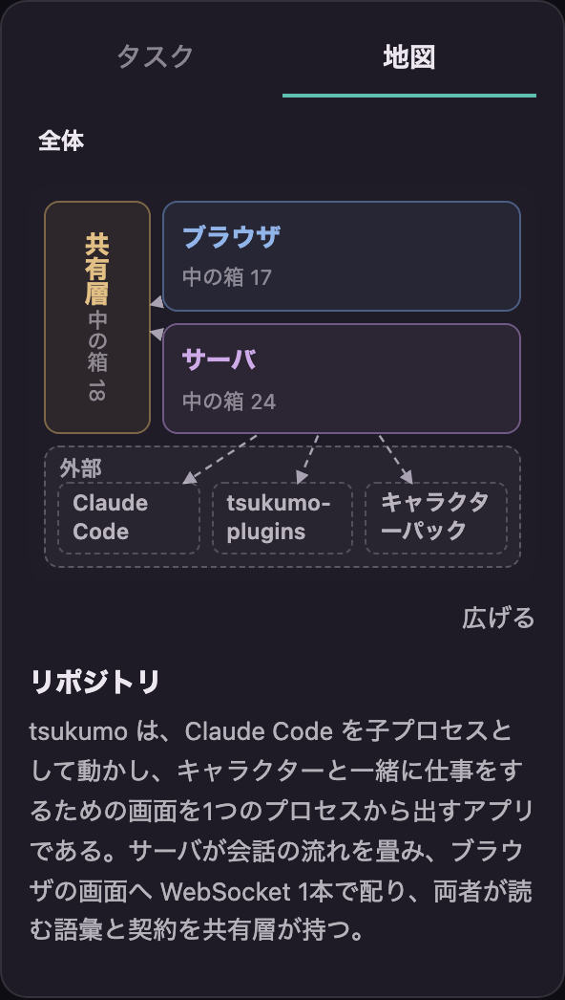
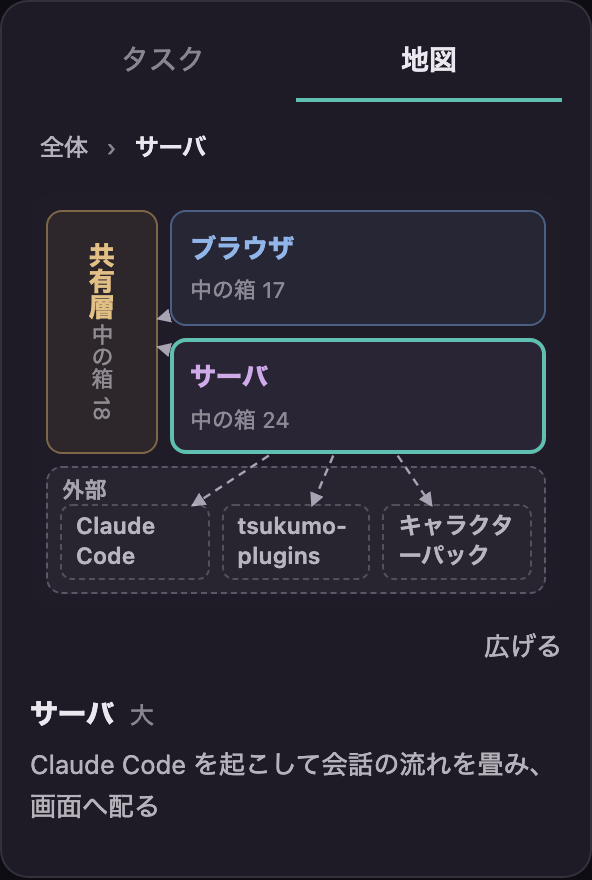

サイドバーの地図 — 境界の区画とパンくず（今と2案）
サイドバーの「地図」のタブを、実寸の幅（296px）で描いた。案の見本は scene.html?form=a|b&at=top|select|deep の近似で、箱の名前・数・説明は今の .architecture-map.json から写した。どの案も、頭に Astryx の Breadcrumbs（variant="supporting"）を置き、「全体」を押すと選びを外してリポジトリの説明へ戻る。
今

外の世界が左、サーバが中、ブラウザが右の格子で、共有層はブラウザの下に置かれている。境界は破線の枠でしか分からず、共有層がサーバとブラウザの両方に効くことが位置から読めない。
案A 3列の区画＋下に横断の帯（推奨）
左から ブラウザ｜サーバ｜外部 の3列にし、共有層はブラウザとサーバの下にまたがる帯にする。ブラウザ・サーバ・共有層は区画そのものが大の箱で、押すと選ぶ。外部だけは区画の中に箱が並ぶ。左から右へ「画面 → サーバ → 外」と依頼の流れの向きにそろう。広げた地図でも同じ組み方をそのまま大きくできる。



案B 縦に積む区画＋左に横断の帯
上から ブラウザ／サーバ／外部 を積み、共有層はブラウザとサーバの左にまたがる縦の帯にする。サイドバーの細い幅では箱の名前が1行に収まりやすいが、広げた地図（横に広い）では別の組み方が要る。



見比べ
| 観点 | 今 | 案A | 案B |
|---|---|---|---|
| 実行の境界（ブラウザ・サーバ・外部）が見える | 外部の破線だけ | 3列の区画 | 3段の区画 |
| 共有層が両方に効くと読める | 読めない | 2列の下にまたがる | 2段の横にまたがる |
| 296px で箱の名前 | 「tsukumo-pl…」「キャラクターパ」で切れる | 外部の箱が2行に折れる | 1〜2行で収まる |
| 広げた地図と同じ組み方 | 同じ | そのまま広げられる | 横長の画面では組み直しが要る |
| 全体へ戻る | 無い | パンくずの「全体」 | パンくずの「全体」 |
Astryx と自前の分け方
| 部分 | 今 | 提案 |
|---|---|---|
| パンくず（サイドバー・広げた地図） | サイドバーに無い。広げた地図は自前の nav と button | Astryx の Breadcrumbs・BreadcrumbItem |
| 「広げる」「+」「−」「全体」「閉じる」 | 自前の button | ui/button（Astryx の Button）、拡大・縮小の組は ButtonGroup |
| 箱の説明（置き場・用語・つながり） | 自前の見出しと一覧 | ui/heading・ui/metadata-list |
| 区画と箱 | SVG の rect と text | HTML の格子とボタン（字が箱の幅で折れ、箱の外へはみ出さない。押す・フォーカスはボタンの作法） |
| 矢印・格子への配置・拡大縮小とドラッグ | 自前の SVG | 自前のまま（Astryx に図の部品は無い）。矢印は描いたあとの箱の位置を測って SVG を重ねる |
契約に要ること
今の地図のファイルは、箱が「どの区画に属すか」を持たない（external と place だけ）。区画を描くには、地図の定義と地図のファイルに区画の並び（例: [[lanes]] の id・title・kind = "runtime" | "crosscut" | "external"）と、大の箱の lane を足す。任意の欄にすれば版は上げずに済み、区画の無い地図は今の格子で描く。